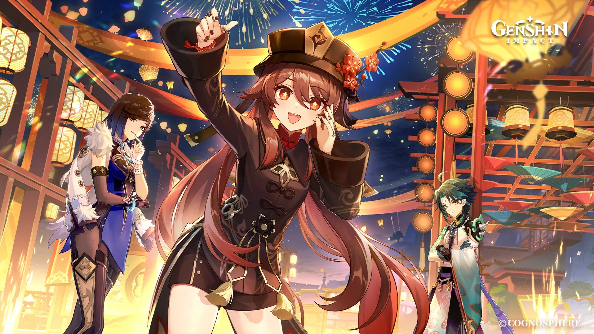
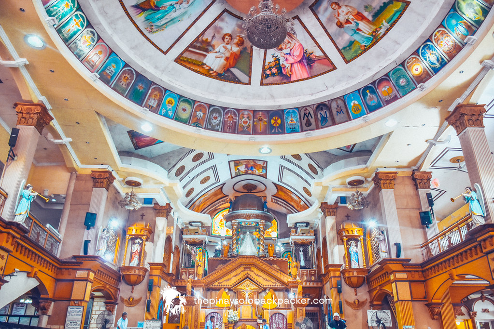
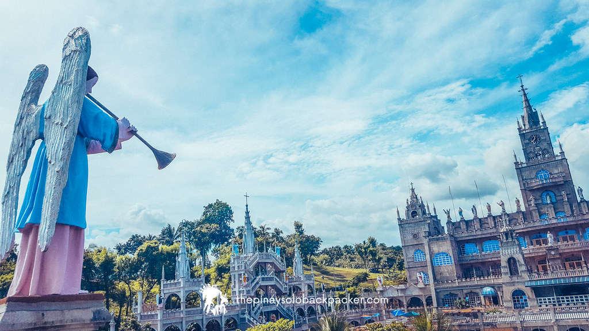
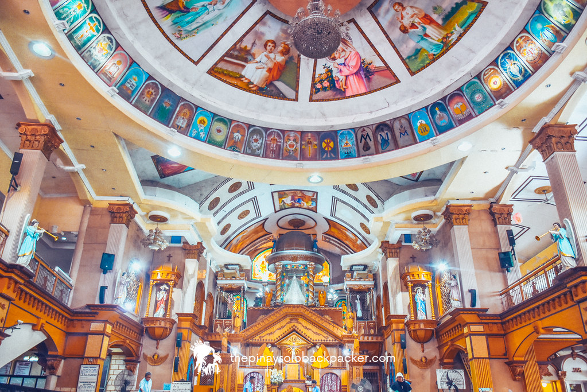
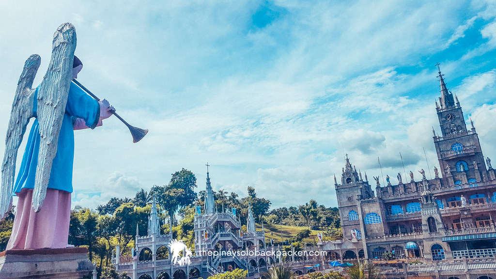
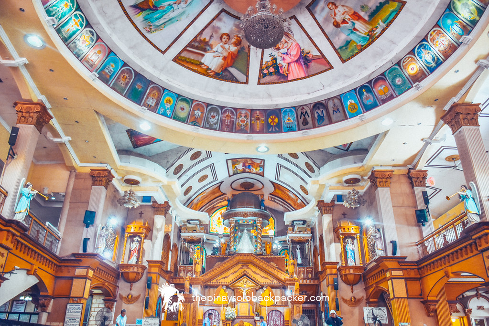
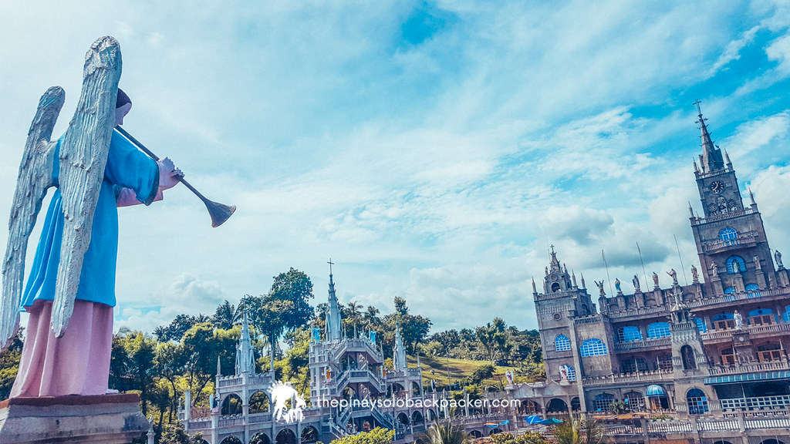

Considered to be a place of pilgrimage for Roman Catholics, the Simala Shrine is home to the image of Our Lady of Lindogon, which is revered by followers of the Virgin Mary and is thought to have miraculous properties. In 1998, after it was said to have shed tears, the picture was associated with the cure of dengue patients in the region.


 






Photo Credits: Cebu Tours, thepinaysolobackpacker, Tres T
The History of Simala
The history of Simala Church, also called the Monastery of the Holy Eucharist, is fascinating. The Marian Monks of Eucharistic Adoration (MMEA) own it, and among its nuns are members of other communities, including SSA (Sister Servants of the Abandoned), SSE (Sister Servants of Mater Evangelorum), and SSMM (Sister Servants of Mama Mary). Simala Church began to draw large crowds of pilgrims in 1997 as a place of prayer for the Blessed Virgin Mary.
An elderly man named Ingkong Villamor is mentioned in one of the earliest documented tales regarding Simala. It was said that Villamor possessed prophetic abilities. He claimed that a desolate hill would be ruled by a white woman and turned into a sacred place. After his death, his son Monsignortomas Villamor was ordained as a priest. Monsignortomas intended to construct a monastery for the aforementioned Marian Monks of Eucharistic Adoration (MMEA) upon their relocation to Cebu. They found a remote hill in Brgy. Lindogon after conducting a search. There, they began growing trees and eventually built a nipa house.
Sadly, dengue began to spread throughout the community, and many children got extremely ill, or died as a result of their families' inability to pay for their hospitalization. Then a man by the name of Frater Martin urged the crowd to join in on a penitence walk. After that, the children afflicted with Dengue were cured, and the neighborhood was free of insects and mosquitoes. The villagers also saw new flowers beginning to bloom, quickly covering the hills. Crowds of people from all over the nation began to visit the location after that due to the miraculous events, and it eventually became known as the "White Lady Sanctuary".